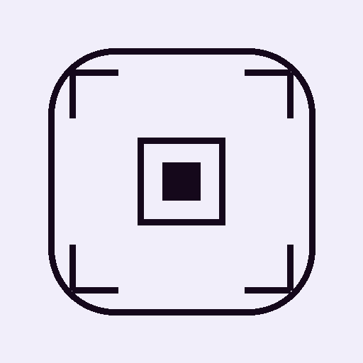

QRWahr
QR-Code scannen, Inhalt sehen, selbst entscheiden.
QR-Code scannen
Der Inhalt wird nur angezeigt – nichts öffnet sich automatisch. Alles läuft lokal auf deinem Gerät.
Erkannter Inhalt
Extern öffnen
Kopieren
QR-Code in den Rahmen halten